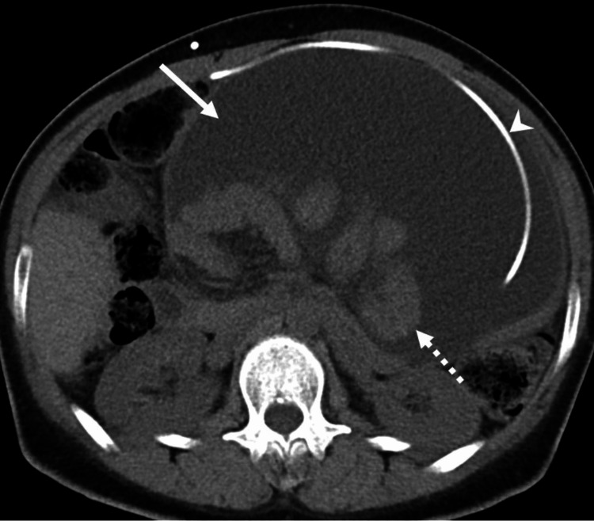
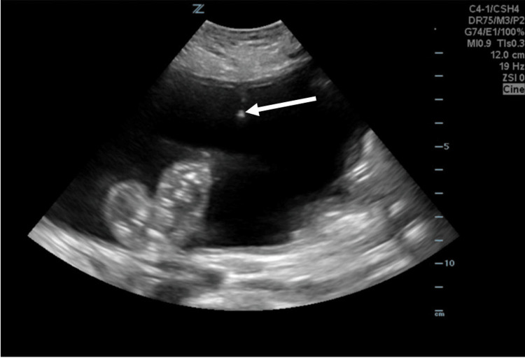
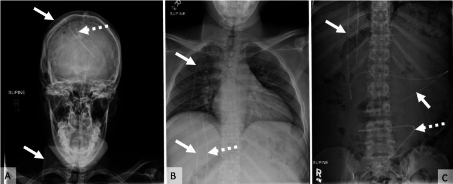
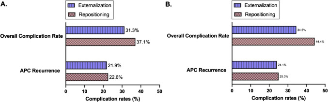

3039 — Nhiễm trùng shunt não thất–phúc mạc & nang giả phúc mạc: nang vô khuẩn hay nhiễm, rút shunt hay đổi vị trí?
Tags: pattern:nang-dich-khu-tru pattern:ngam-thanh pattern:gian-nao-that pattern:dich-tu-do-o-bung vung:phuc-mac vung:nao-that score:CSF-cell-index protocol:CT-bung protocol:sieu-am-bung protocol:shunt-series protocol:choc-do-tuy-song
Mức chắc chắn (certainty): tổng hợp y văn (literature synthesis) — ghép tổng quan hệ thống 43 bài về nang giả phúc mạc vô khuẩn (PMC12000107, Childs Nerv Syst 2025, CC BY), cohort 390 ca mổ lại shunt so sánh nhiễm trùng với hỏng cơ học (PMC12917439), nghiên cứu 110 ca nhiễm đơn lẻ + 55 ca tái nhiễm về chiến lược hai thì (PMC11762661), cohort 81 trẻ/113 lần mổ lại về kém hấp thu phúc mạc (PMC12926232), meta nguy cơ nhiễm shunt (PMC12562948), nghiên cứu 317 ca đa bệnh viện (PMC11942643), ca nguyên văn có ảnh X-quang/CT/siêu âm (PMC12405959, Cureus, CC BY) và tổng quan điều trị viêm não thất/nhiễm liên quan thiết bị (PMC8896765).
Câu hỏi thực hành: bé gái 3 tuổi, shunt não thất–phúc mạc (VP shunt) đã 2 lần mổ lại, vào viện vì sốt 38,5 °C + bụng chướng 5 ngày, không nôn, không tiêu chảy. Siêu âm bụng: khối dịch lớn vô hiệu, có vách, đầu catheter nằm trong. CT: khối dịch khu trú 9 cm, thành mỏng ngấm thuốc, không có hơi. Câu hỏi: đây là nang giả vô khuẩn hay ổ nhiễm? Có phải rút toàn bộ shunt? Kháng sinh gì, bao lâu, khi nào đặt lại? Bài chốt theo ba lớp: (1) hình ảnh chỉ nói “có nang”, không nói “có mủ” — dịch não tủy (DNT) + cấy đầu catheter mới quyết định; (2) nhiễm = rút toàn bộ, không “đổi vị trí” (màng sinh học trên ống không kháng sinh nào xuyên được); (3) nang vô khuẩn có hai lựa chọn ngoại hóa (externalization) hoặc đổi vị trí đầu xa, không khác nhau có ý nghĩa về tái phát. Nối 3037 – Nhiễm trùng não thất & EVD, 3034 – IVH & não úng thủy, 3032 – Não úng thủy áp lực bình thường, 214 – Nhiễm trùng hệ thần kinh trung ương, 100 – Tổng quan hệ Bụng.
1. Tổng quan bệnh học – cơ chế hình ảnh: vì sao DNT lại thành một “nang” trong ổ bụng
- Sinh lý nền: người lớn có ~150 mL DNT, được đổi mới 4–5 lần/ngày (≈ 600–750 mL/ngày); phần lớn tái hấp thu qua hạt màng nhện, một phần thoát qua bạch mạch hoành với tốc độ 1–1,5 mL/phút (PMC12926232). Shunt đẩy toàn bộ lượng DNT đó vào khoang phúc mạc, nơi khả năng hấp thu là hữu hạn và phụ thuộc lớp trung biểu mô.
- Cơ chế nang giả: viêm màng bụng (do mổ nhiều lần, nhiễm khuẩn độ thấp, DNT protein cao, phản ứng với catheter) → fibrin hóa, dày trung biểu mô, mất lớp hấp thu khu trú → DNT bị vây quanh đầu catheter trong một khoang xơ KHÔNG có biểu mô lót (pseudocyst, không phải nang thật). Vì không có biểu mô, thành nang do viêm sinh ra, nên ngấm thuốc khi còn viêm hoạt động và có thể nhiễm khuẩn thứ phát.
- Vì sao nang gây “shunt hỏng” mà não có thể không giãn: khoang nang tạo áp lực đối kháng → dòng DNT giảm/tắc; nhưng nhu mô não đã mất đàn hồi (đặc biệt trẻ có não úng thủy bẩm sinh, nhiều lần mổ) nên không giãn tương ứng. Đừng chờ “não thất to lên” mới chẩn đoán.
- Vì sao hình ảnh không phân biệt được vô khuẩn/nhiễm: cả hai đều là dịch 0–20 HU, thành mỏng, có vách; dấu hiệu gợi ý nhiễm chỉ là thành dày > 3 mm, ngấm mạnh, mảnh trong lòng, hơi (hiếm) — không đủ để chốt. Quyết định nằm ở tế bào/cấy DNT + cấy đầu catheter.
- Ngưỡng định lượng phải nhớ:
- Tần suất nang giả phúc mạc: 1–4,5% ca đặt VP shunt (PMC13544839, trích trong PMC12000107); một số loạt ghi 0,25–10%, tái phát tới 19,8% (PMC12954247).
- Tần suất nhiễm shunt: 9,6% (225/2.333 bệnh nhân, gộp 5 nghiên cứu — PMC12562948); 7,26% (23/317, đa bệnh viện — PMC11942643); 6% VP / 5,2% LP (161 shunt, Ấn Độ — PMC12442118).
- Yếu tố nguy cơ nhiễm: tuổi < 6 tháng: RR 33,06 (9,27–117,99)** (meta nhi — PMC11799681); **não úng thủy bẩm sinh OR 2,502**, **thoát vị tủy–màng não OR 2,359**, **úng thủy do u OR 0,418** (PMC12562948); **ASA trước mổ > 3: HR 8,28 (PMC12442118).
- Thời điểm: 58,06% nhiễm xuất hiện trong 2 tuần đầu (PMC11942643); trong cohort 390 ca, 72,9% ca nhiễm phải mổ lại trong 6 tháng đầu so với 42% ca hỏng cơ học (PMC12917439).
- Dấu hiệu phân biệt nhiễm vs hỏng cơ học (390 ca): sốt 70,7% vs 16,4%; CRP tăng 88,5% vs 6,4% (OR 64,1); bạch cầu máu tăng 72,1% vs 15,6% (OR 19,7); glucose DNT thấp 51,4% vs 13%; protein DNT cao 76,4% vs 36%; tuổi < 1: 51,4% vs 27,2% (PMC12917439).
- Cấy và nhuộm: cấy DNT dương 85,7%; CoNS 55% (S. epidermidis 42,8%); nhuộm trực tiếp dương 79,3% → 14,3% nhiễm vẫn cấy âm (PMC12917439).
- Siêu âm bụng: trong hỏng cơ học, dịch tự do 33,3%, áp-xe 1,3%; trong nhiễm, dịch tự do 37,8%, áp-xe 25,5% (PMC12917439) — “dịch tự do” không loại được nang.
- Nang giả vô khuẩn — ngoại hóa vs đổi vị trí (tổng quan hệ thống 43 bài): tái phát 24,1% (ngoại hóa) vs 25,0% (đổi vị trí), p = 0,99; biến chứng chung 34,5% vs 44,4%, p = 0,3861 (nhóm theo dõi ≥ 6 tháng); tính mọi thời điểm: biến chứng 31,3% vs 37,1%, tái phát 21,9% vs 22,6% (PMC12000107).
- Kém hấp thu phúc mạc ở trẻ (81 bệnh nhân/113 lần mổ lại): 10 bệnh nhân (10 nang giả + 1 cổ trướng không do gan); mổ bụng xuyên phúc mạc trước đó OR 11,81 (2,73–51,04); nhiều lần mổ lại OR 8,02 (1,86–34,63); biến dạng trục cột sống OR 4,07 (1,03–16,03), tăng 2,77 lần mỗi độ; 60% vs 11,3% có tiền sử mổ bụng; cứu được phúc mạc 7/10, 3 ca phải chuyển shunt não thất–nhĩ (VA) (PMC12926232).
- Nhiễm tái phát (110 ca đơn lẻ vs 55 ca tái phát): Gram âm 60% ở nhóm tái phát; đề kháng 3GC 85,2%, piperacillin–tazobactam 83,3%, carbapenem 10,4%; chiến lược đổi shunt hai thì làm giảm tái nhiễm; khuyến nghị glycopeptide + carbapenem theo kinh nghiệm (PMC11762661).
- Thời gian kháng sinh: 10–14 ngày với CoNS/C. acnes, tới 21 ngày với S. aureus/Gram âm, tính 10–14 ngày sau lần cấy dương cuối (PMC8896765).

CT bụng không cản quang: khối dịch khu trú (loculated) lớn chiếm gần toàn bộ ổ bụng trước, đầu catheter shunt (đầu mũi tên) nằm bên trong lòng khối, vách và màng bao rõ (mũi tên liền), đẩy quai ruột ra sau và sang bên. Dịch đồng tỷ trọng với nước, không có hơi. Đây là hình mẫu “nang giả phúc mạc” — nhưng hình ảnh một mình KHÔNG nói được vô khuẩn hay nhiễm. Nguồn: Cureus 2026 (PMC12405959), CC BY 4.0.2. Mẫu hình + chẩn đoán phân biệt theo vị trí (gamut)
- Khối dịch khu trú quanh đầu catheter (ổ bụng): nang giả vô khuẩn · nang giả nhiễm/áp-xe · cổ trướng DNT (CSF ascites, dịch tự do) · cổ trướng khu trú do dính · máu tụ/lymphocele sau mổ · nang buồng trứng/khối phần phụ · áp-xe sau thủng tạng (catheter xuyên ruột).
- Bệnh cảnh “shunt hỏng” không có khối dịch: tắc van, tắc đầu xa do mạc nối/quai ruột, di trú catheter (ngực, bìu, trực tràng), gãy/ngắt ống, quá dẫn lưu.
- Trên não: giãn não thất (không bắt buộc) · não thất xẹp + tụ máu dưới màng cứng (quá dẫn lưu — nối 3030) · mủ trong não thất (nối 3037).
- Mnemonic “SHUNT”: Site of distal tip (đầu xa ở đâu) · Hydrocephalus change (não thất có đổi) · Ultrasound abdomen (dịch tự do hay khu trú) · Needle: chọc hút/cấy · Two-stage if infected (rút toàn bộ + EVD).
3. Bảng so sánh phân biệt (ma trận đối chiếu)
| Thực thể | Hình ảnh điển hình | Chốt vào (rule-in) | Chốt loại (rule-out) | Gợi ý xác nhận |
|---|---|---|---|---|
| Nang giả vô khuẩn | Khối dịch khu trú, thành mỏng đều, đầu catheter trong lòng, không hơi; bệnh nhân không sốt, CRP bình thường | Đầu catheter nằm trong khối dịch khu trú + DNT vô khuẩn + không hội chứng nhiễm | Thành dày/ngấm mạnh + sốt + CRP tăng → nghĩ nhiễm | Siêu âm + CT; cấy DNT và đầu catheter |
| Nang giả nhiễm / áp-xe | Thành dày, ngấm mạnh, vách, mảnh trong lòng, hiếm hơi; có thể kèm viêm phúc mạc | Sốt + CRP tăng + DNT bất thường/cấy dương | DNT hoàn toàn bình thường + CRP bình thường không loại được nhiễm khuẩn độ thấp (biofilm) | Cấy đầu catheter sau rút; giữ cấy ≥ 14 ngày cho C. acnes |
| Cổ trướng DNT (CSF ascites) | Dịch tự do giữa các quai ruột, di chuyển theo tư thế, không có thành | Dịch tự do lan tỏa + không vách + shunt còn lưu thông | Có vách/khu trú + đầu catheter trong khối → nang giả | Siêu âm 2 tư thế; CT |
| Cổ trướng khu trú do dính | Dịch trong khoang dính, không nhất thiết quanh catheter | Tiền sử mổ bụng/viêm phúc mạc, vách dày | Đầu catheter nằm ngoài khối → không phải nang giả | CT có cản quang |
| Máu tụ / lymphocele sau mổ | Tỷ trọng cao (máu cấp 50–80 HU), không ngấm hoặc viền mỏng | Mổ trong vòng vài ngày, Hb giảm | Dịch 0–20 HU + không thiếu máu | CT không/có cản quang |
| Nhiễm trùng shunt không có nang | Não thất có thể không giãn; phù mô mềm quanh ống; đầu xa bình thường | Sốt + CRP tăng + cấy DNT dương | Không sốt, CRP bình thường → ít nghĩ nhiễm | Chọc qua reservoir, không chọc thắt lưng mù |

*Siêu âm: khối dịch vô hiệu (anechoic), giới hạn rõ, đầu catheter là điểm tăng âm trong lòng khối (mũi tên). Hình bên là kim chọc hút dưới hướng dẫn siêu âm. Siêu âm là bước đầu tay vì nhanh, không xạ, phân biệt dịch tự do vs khu trú và cho đường chọc hút chẩn đoán. Nguồn: Cureus 2026 (PMC12405959), CC BY 4.0.*Vì sao “đổi vị trí đầu xa” không đủ khi có nhiễm
- Catheter nhiễm có màng sinh học (biofilm): vi khuẩn bám trong lớp polysaccharide — kháng sinh không xuyên qua, và cấy dịch rửa có thể âm trong khi ống vẫn nhiễm.
- Đổi vị trí chỉ chuyển ống sang chỗ khác nhưng giữ nguyên ống nhiễm → tái nhiễm; trong nghiên cứu 110 ca, chiến lược hai thì (rút toàn bộ → EVD → đặt lại) làm giảm tái nhiễm (PMC11762661).
- Ngoại lệ: nang giả vô khuẩn — nơi không có biofilm, đổi vị trí và ngoại hóa tương đương (PMC12000107).
4. Protocol
- Đánh giá ban đầu (không bỏ bước nào):
- Toàn thân: sốt, CRP, bạch cầu; khám bụng (chướng, đau khu trú, phản ứng thành bụng).
- Thần kinh: đau đầu, nôn, gai thị — lưu ý gai thị vắng mặt 92,7% ca hỏng cơ học (PMC12917439) → không loại trừ.
- Hình ảnh theo bậc:
- X-quang “shunt series” (sọ → cổ → ngực → bụng): kiểm tra liên tục, gãy, di trú, vị trí đầu xa; không đánh giá được nang.
- Siêu âm bụng: bước đầu tay — dịch tự do vs khu trú, vách, đầu catheter, hướng chọc.
- CT bụng có cản quang: khi siêu âm không rõ, nghi áp-xe/vách/bowel obstruction, hoặc cần đo kích thước–thành nang trước mổ.
- CT/MRI sọ: đánh giá não thất, máu tụ dưới màng cứng do quá dẫn lưu, mủ trong não thất.
- Lấy mẫu — quyết định chẩn đoán:
- Chọc qua reservoir/buồng shunt (hoặc chọc nang dưới siêu âm) → tế bào, glucose, protein, lactate, Gram, cấy; KHÔNG chọc thắt lưng mù ở bệnh nhân có shunt (nguy cơ tụt não — nối 3026 – Tụt não nghịch lý).
- Cấy đầu catheter sau khi rút — mới là chốt của nhiễm liên quan thiết bị; giữ cấy ≥ 14 ngày cho C. acnes (chậm mọc).
- Xử trí theo kết quả:
- Nang giả vô khuẩn: ngoại hóa đầu xa hoặc đổi vị trí (ổ bụng khác/phúc mạc–màng phổi/tĩnh mạch); không khác nhau có ý nghĩa; nang rất lớn phải dẫn lưu từ từ để tránh tụt huyết áp do giải ép nhanh (PMC12926232).
- Nhiễm shunt/nang nhiễm: rút toàn bộ hệ thống + đặt EVD + kháng sinh tĩnh mạch; đặt lại khi DNT vô khuẩn và toàn trạng ổn (chiến lược hai thì).
- Kháng sinh kinh nghiệm: glycopeptide + carbapenem nếu có yếu tố nguy cơ Gram âm/đã dùng kháng sinh dài (PMC11762661); theo hệ vi khuẩn địa phương — Ấn Độ Gram âm 77%, Thổ Nhĩ Kỳ CoNS 55% (PMC12442118, PMC12917439). Thời gian: 10–14 ngày (CoNS/C. acnes) hoặc tới 21 ngày (S. aureus/Gram âm), tính từ lần cấy dương cuối (PMC8896765).
- Kháng sinh trong não thất: có thể dùng như bổ trợ ở ca khó (37 đợt ở trẻ, dung nạp tốt, DNT sạch nhanh — PMC13446907), nhưng chưa có RCT.
- Theo dõi sau mổ: siêu âm/CT bụng nếu sốt lại; đau đầu + não thất xẹp → nghĩ quá dẫn lưu; tái phát nang 24–25% → hẹn khám và chụp lại có chủ đích.
flowchart TD
A["Bệnh nhân có VP shunt + bụng chướng/sốt"] --> B["X-quang shunt series<br/>+ siêu âm bụng"]
B --> C{"Có khối dịch quanh đầu catheter?"}
C -- "Không" --> C1["Tìm nguyên nhân khác<br/>tắc van, di trú, gãy ống, quá dẫn lưu"]
C -- "Có" --> D["CT bụng có cản quang<br/>đánh giá thành, vách, ruột"]
D --> E["Chọc qua reservoir hoặc chọc nang<br/>tế bào · glucose · protein · Gram · cấy"]
E --> F{"Có nhiễm?<br/>sốt + CRP tăng + DNT bất thường/cấy dương"}
F -- "Không" --> G["Nang giả VÔ KHUẨN"]
G --> H["Ngoại hóa đầu xa HOẶC đổi vị trí<br/>tái phát ~24-25% · không khác biệt"]
F -- "Có" --> I["Rút TOÀN BỘ shunt + đặt EVD<br/>kháng sinh tĩnh mạch"]
I --> J["Cấy đầu catheter (giữ ≥ 14 ngày)<br/>kháng sinh theo kết quả"]
J --> K{"DNT vô khuẩn + toàn trạng ổn?"}
K -- "Chưa" --> I
K -- "Rồi" --> L["Đặt lại shunt<br/>ưu tiên vị trí mới, tránh ổ bụng bị dính"]
5. Biến thể bình thường và cạm bẫy
- “Không sốt, CRP bình thường” không loại được nhiễm: C. acnes/CoNS gây nhiễm âm thầm, cấy chậm; 14,3% ca nhiễm có cấy DNT âm (PMC12917439).
- “Nang nhỏ, không triệu chứng” vẫn có thể nhiễm: hình ảnh không phân biệt; nếu bệnh nhân có shunt hỏng + nang, luôn lấy DNT trước khi quyết định chỉ đổi vị trí.
- Đừng nhầm dịch tự do với nang: cổ trướng DNT lan tỏa, không vách, đổi theo tư thế; nang giả khu trú, đầu catheter trong lòng. Siêu âm 2 tư thế + CT giúp phân biệt.
- Đừng chọc thắt lưng ở bệnh nhân có shunt/nang lớn: nguy cơ tụt não nghịch lý; lấy DNT qua reservoir.
- Nang rất lớn: dẫn lưu một lần quá nhanh có thể gây tụt huyết áp (giải ép ổ bụng) — dẫn lưu từng phần (PMC12926232).
- Trẻ nhỏ: tuổi < 6 tháng là yếu tố nguy cơ mạnh nhất (RR 33,06); nhiều lần mổ lại + mổ bụng trước đó làm kém hấp thu phúc mạc → cân nhắc sớm VA shunt thay vì cố giữ phúc mạc.
- Nhiễm tái phát: Gram âm kháng 3GC 85,2% → không dùng cephalosporin 3 đơn thuần làm kinh nghiệm ở nhóm này (PMC11762661).
- Chẩn đoán muộn: nang giả có thể nhiều năm sau đặt shunt (ca 32 tuổi, 12 giờ đau cấp trên nền 2 tuần chướng) — tiền sử shunt là manh mối bắt buộc khi đọc CT bụng.
6. Tự lượng giá — Blind Quiz
Ca 1 — Nữ 32 tuổi, não úng thủy bẩm sinh, nhiều lần mổ shunt, đau bụng 12 giờ + chướng 2 tuần, không sốt. Nhìn X-quang và CT, mô tả trước.

- Hỏi: ống shunt có liên tục không? Có gãy/ngắt không? X-quang nói được gì về nang?
Bấm để hiện đáp án
- Shunt series: catheter liên tục từ sọ → cổ → ngực → bụng, còn vài catheter cũ bị bỏ (mũi tên đứt) — không gãy, không ngắt.
- X-quang KHÔNG đánh giá được nang — chỉ loại gãy/ngắt/di trú. Bước tiếp theo là siêu âm/CT bụng.
- CT: khối dịch khu trú lớn, thành mỏng, đầu catheter nằm trong lòng → nang giả phúc mạc.
- Bệnh nhân không sốt → hướng vô khuẩn, nhưng vẫn phải chọc hút/cấy trước khi kết luận; ca gốc được chọc hút dưới siêu âm + điều trị bảo tồn, triệu chứng giảm.
- Nguồn: Cureus 2026 (PMC12405959), CC BY 4.0.
Ca 2 — Bé trai 2 tuổi, VP shunt, sốt 39 °C, bụng chướng, CRP 180 mg/L. Siêu âm có khối dịch quanh catheter.
- Hỏi: bước tiếp theo? Nếu DNT đục và cấy Gram dương, có được “đổi vị trí đầu xa” không?
Bấm để hiện đáp án
- Chọc hút dưới siêu âm để lấy dịch: tế bào, glucose, protein, Gram, cấy; đồng thời lấy DNT qua reservoir.
- Sốt + CRP tăng + dịch đục/cấy dương = nhiễm → rút TOÀN BỘ shunt + EVD + kháng sinh tĩnh mạch, không đổi vị trí đầu xa (biofilm vẫn còn).
- Đặt lại khi DNT vô khuẩn và toàn trạng ổn; cân nhắc vị trí mới (ổ bụng khác, màng phổi, tĩnh mạch) vì nhiều lần mổ lại là yếu tố nguy cơ kém hấp thu phúc mạc (OR 8,02).
- Nguồn: ảnh Cureus 2026 (PMC12405959, CC BY 4.0); số liệu từ PMC11762661, PMC12926232.
Ca 3 — Bảng so sánh hai chiến lược ở nang giả vô khuẩn: đọc biểu đồ và trả lời.

- Hỏi: chiến lược nào ít biến chứng hơn? Khác biệt có ý nghĩa không? Kết luận thực hành?
Bấm để hiện đáp án
- A (mọi thời điểm): biến chứng 31,3% (ngoại hóa) vs 37,1% (đổi vị trí); tái phát 21,9% vs 22,6%.
- B (theo dõi ≥ 6 tháng): biến chứng 34,5% vs 44,4%; tái phát 24,1% vs 25,0%; p = 0,3861 và p = 0,99 → không có khác biệt có ý nghĩa.
- Kết luận: chọn theo điều kiện bệnh nhân và kinh nghiệm phẫu thuật, không có “chuẩn vàng”; tái phát ~1/4 nên phải hẹn theo dõi.
- Nguồn: Childs Nerv Syst 2025 (PMC12000107), CC BY 4.0.
Bài liên quan chéo
- 3037 – Nhiễm trùng não thất & nhiễm trùng EVD (nhiễm catheter não thất — cùng nguyên lý biofilm)
- 3034 – IVH & não úng thủy sau xuất huyết (khi nào shunt vĩnh viễn)
- 3032 – Não úng thủy áp lực bình thường (shunt ở người lớn, biến chứng quá dẫn lưu)
- 3030 – Tụ máu dưới màng cứng mạn (biến chứng quá dẫn lưu sau shunt)
- 3026 – Tụt não nghịch lý sau chọc dò ở bệnh nhân có shunt (tụt não nghịch lý)
- 214 – Nhiễm trùng hệ thần kinh trung ương
- 100 – Tổng quan hệ Bụng
Không dùng để chẩn đoán độc lập khi chưa có người hướng dẫn.